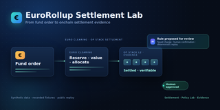
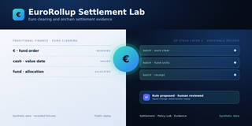
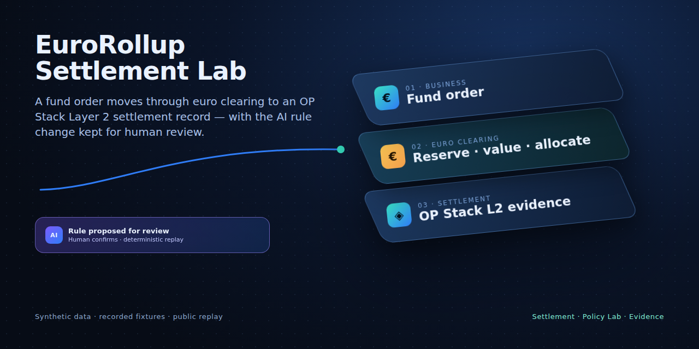

ConceptFund order → euro clearing → OP Stack L2 evidence; AI rule review and human approval badges.

ConceptTraditional finance ledger on the left, onchain batch record on the right, euro medallion at the seam.


ConceptThree settlement layers (business, euro clearing, L2 evidence) with flow arrow and AI review callout.